Sheds


(c) Modern Shed, Inc All Rights Reserved. Privacy Policy. Terms of Use.

SHEDS
Let’s revise your living space with abundance in mind.
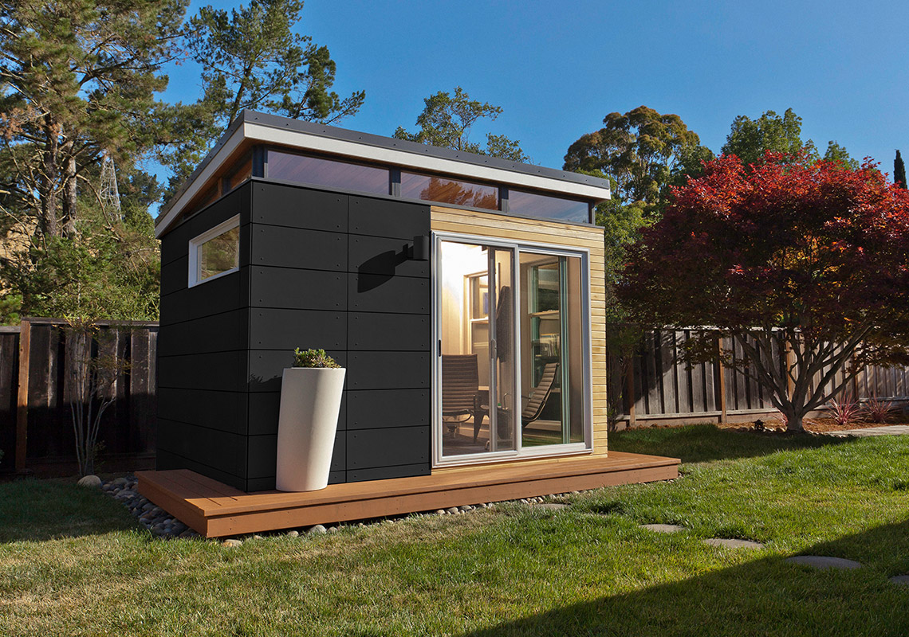

Unique to you
Modern-Shed is your own personal architect. You’ll work one-on-one with our specialists to create just the right space for your need and budget, shaping your shed to fit in with your individual purpose. Here's a cost-effective and design-conscious way to add on to your home, with care, intention, and precision.
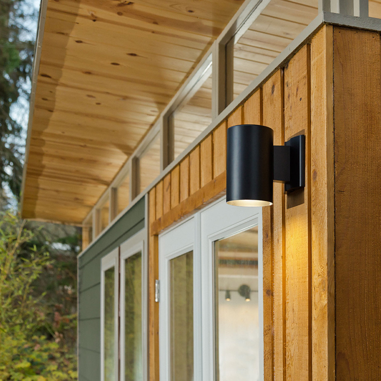
Unique to you
Modern-Shed is your own personal architect. You’ll work one-on-one with our specialists to create just the right space for your need and budget, shaping your shed to fit in with your individual purpose. Here's a cost-effective and design-conscious way to add on to your home, with care, intention, and precision.
Sizes
S
- Home Office
- Storage
- Shed
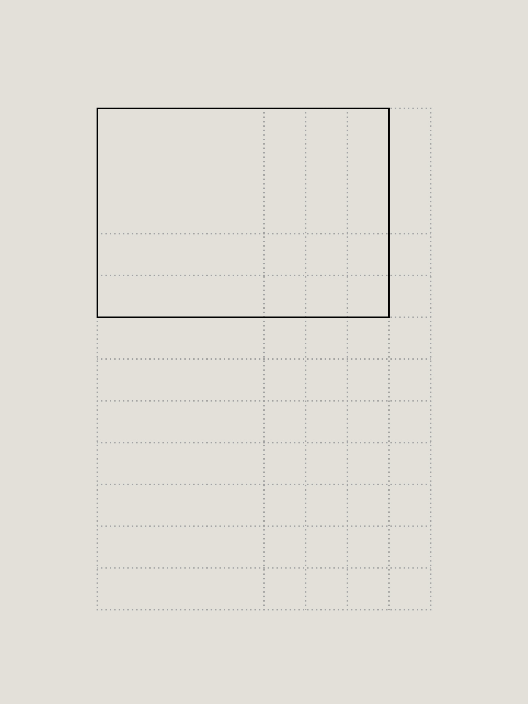
Sheds made to serve as storage or other small but mighty uses. This option is popular for home offices, art studios, or playrooms.
M
- Home Office
- Guest Space
- Gym
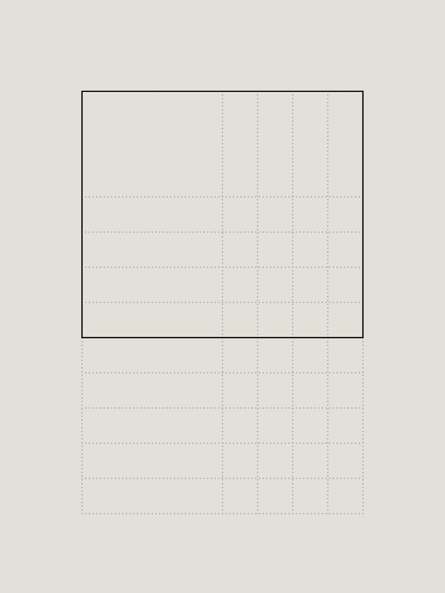
A shed to spend some quality time in. We suggest this layout for secondary guestrooms, workout spaces, or as your primary, often-frequented office.
L*
- Rental Unit
- Guest Space
- Dwelling
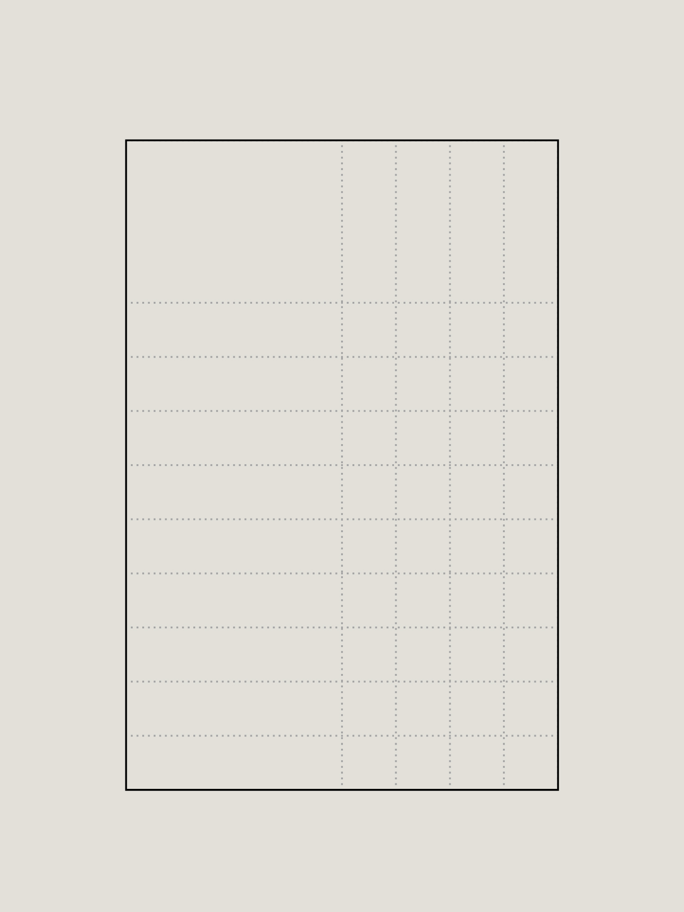
Living large requires a bit more stretching room, so here's a shed full of opportunity.
Small
Home Office, Storage, Shed
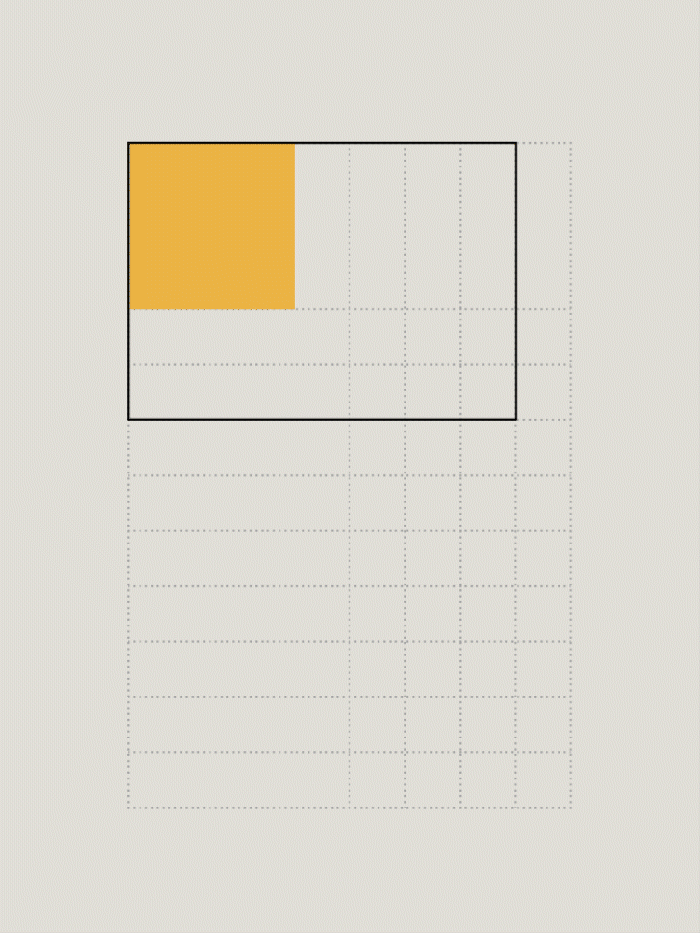
Sheds made to serve as storage or other small but mighty uses. This option is popular for home offices, art studios, or playrooms.
Medium
Home Office, Guest Space, Gym
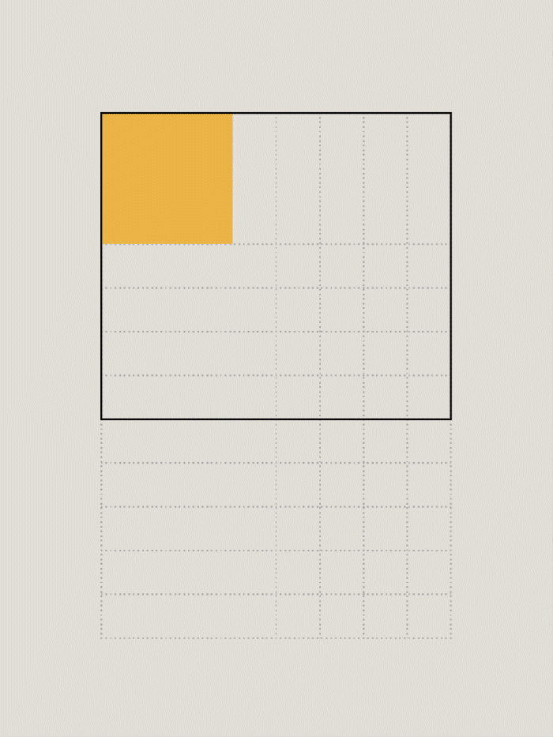
A shed to spend some quality time in. We suggest this layout for secondary guestrooms, workout spaces, or as your primary, often-frequented office.
Large *
Rental Unit, Guest Space, Dwelling

Living large requires a bit more stretching room, so here's a shed full of opportunity.
* May require local permitting

Interested in a shed?
Get in contact with our team.
Interested in a shed?
Get in contact with our team or browse more.
Materials
Let’s talk about our high standards—we’ve hand-selected an extensive variety of materials that are not only eco-friendly, but will stand the test of time.
Download Catalog →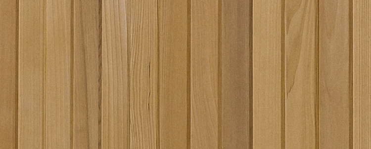
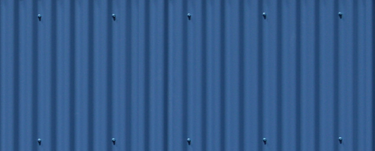
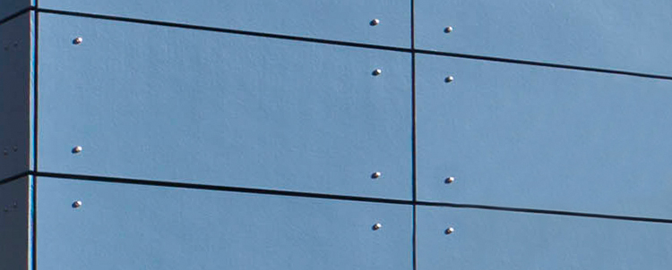
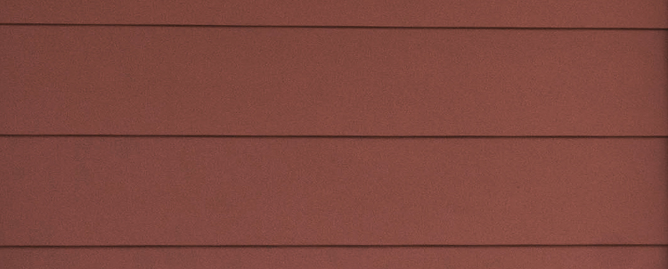
Wood Grating
Metal
Wood Paneling
Painted Siding
Scandinavian inspired. These wood grating panels are stylish and timeless.
With Champion Metal, our sheds save energy and promise a durable, streamlined design.
From ceiling to wall lining, ours comes in a double-sided wood veneer faced plywood.
Modern-Shed gives you the choice between five types of painted siding, custom-colored in your favorite hue.
Materials
Let’s talk about our high standards—we’ve hand-selected an extensive variety of materials that are not only eco-friendly, but will stand the test of time.
Wood Grating
Scandanavian inspired. These wood grating panels are both stylish and timeless.
Metal
With Champion Metal, our sheds save energy and promise a durable, streamlined design.
Wood Paneling
From ceiling to wall lining, ours comes in a double-sided wood veneer faced plywood.
Painted Siding
Modern-Shed gives you the choice between five types of painted siding, custom-colored in your favorite hue.
Windows
We’re going to let the light in. Our Modern-Sheds are bright and airy even with just a few well-placed windows, all thanks to the unique transom windows below the roof line. We offer an expansive variety of window sizes and materials for any budget and particular style.
Download Catalog →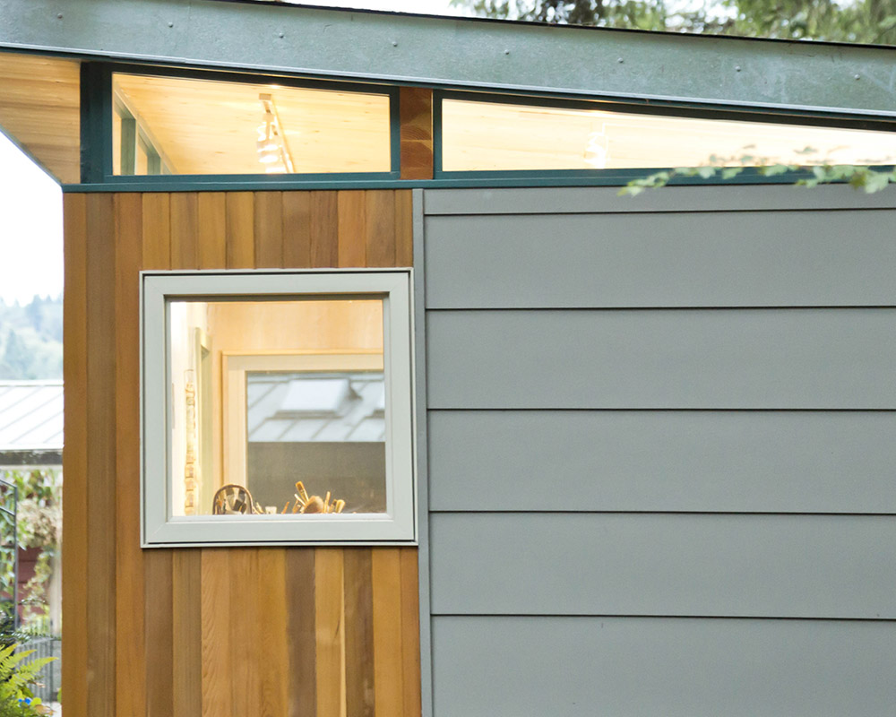
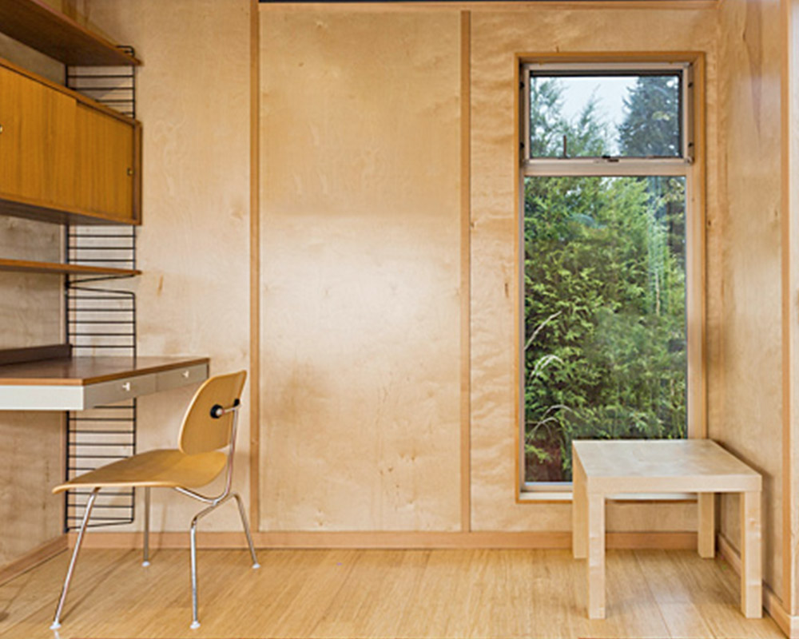
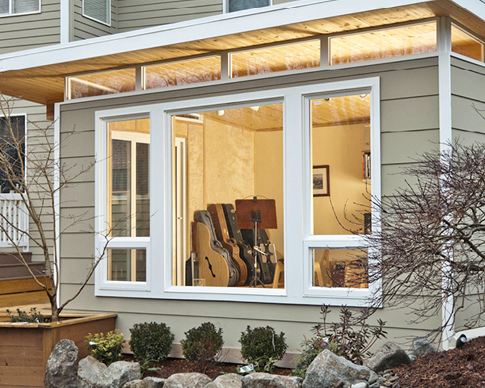
Small Opening
Tall Combination
Full Picture
From square to rectangular, windows can be opened to the outside breeze as awnings, sliding, or casements.
Fixed over awning, fixed under awning, fixed under sliding, fixed over sliding⏤we could go on and on. The combinations to make your shed unique are truly endless.
Let the outdoors in. We offer a multitude of sizing options between small to large.
Windows
We’re going to let the light in. Our Modern-Sheds are bright and airy even with just a few well-placed windows, all thanks to the unique transom windows below the roof line. We offer an expansive variety of window sizes and materials for any budget and particular style.
Small Opening
From square to rectangular, windows can be opened to the outside breeze as awnings, sliding, or casements.
Tall Combination
Fixed over awning, fixed under awning, fixed under sliding, fixed over sliding⏤we could go on and on. The combinations to make your shed unique are truly endless.
Full Picture
Let the outdoors in. We offer a multitude of sizing options between small to large.
Windows
We’re going to let the light in. Our Modern-Sheds are bright and airy even with just a few well-placed windows, all thanks to the unique transom windows below the roof line. We offer an expansive variety of window sizes and materials for any budget and particular style.
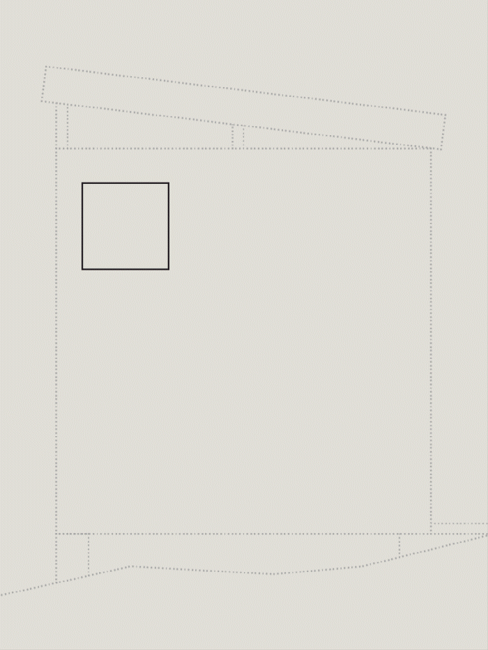
Doors
Customize your entry way with more than a welcome mat. Choose between over two dozen options—from French doors to sliding, steel to fiberglass. What best serves your vision?
Download Catalog →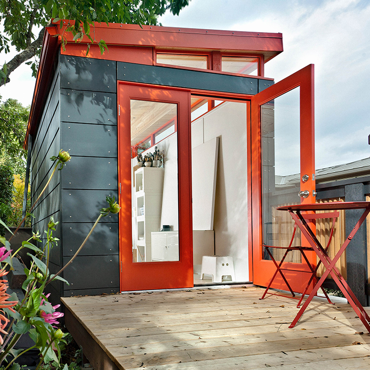
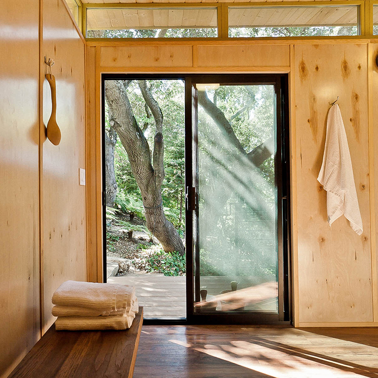
French Swing
Sliding
From windowless to French-style, and of course, with built to last, weather-defying hardware.
Easily customizable sizing to fill your shed with sunlight while utilizing maximum energy efficiency.
Doors
Customize your entry way with more than a welcome mat. Choose between over two dozen options—from French doors to sliding, steel to fiberglass. What best serves your vision?
French Swing
From windowless to French-style, and of course, with built to last, weather-defying hardware.
Sliding
Easily customizable sizing to fill your shed with sunlight while utilizing maximum energy efficiency.
Doors
Customize your entry way with more than a welcome mat. Choose between over two dozen options—from French doors to sliding, steel to fiberglass. What best serves your vision?
French Swing
Sliding

(c) Modern Shed, Inc All Rights Reserved.
Privacy Policy. Terms of Use.
(c) Modern Shed, Inc All Rights Reserved.
Privacy Policy. Terms of Use.